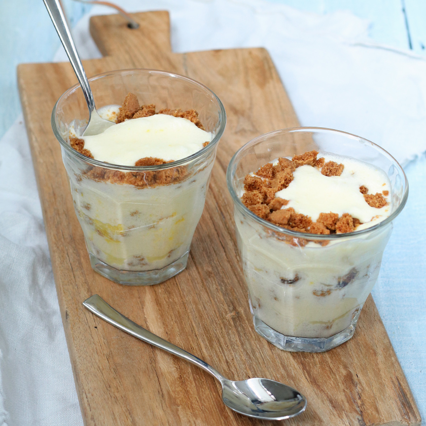

Mousse van limoncello met Bastogne
als nagerecht Mousse van limoncello met Bastogne
u heeft voor dit gerecht 4 kleine glaasjes en een Staafmixer nodig
- 2 eieren
- 40 gr suiker
- 100 ml slagroom
- 50 ml limoncello
- 1 citroen
- 2 gelatineblaadjes
- 1 eetlepel poedersuiker
- 10 bastogne koekjes
Bereidingwijze
- Laat de gelatineblaadjes weken in koud water zoals aangegeven op de verpakking. Rasp de schil van de citroen (bewaar de citroen voor later), en splits de eieren.
- Meng de eidooiers met het citroenrasp en de suiker en klop goed door. Pers de citroen uit en verwarm het citroensap in een klein pannetje.
- Voeg de geweekte gelatine hieraan toe en laat oplossen. Laat even afkoelen en roer door het eiermengsel.
- Roer daarna ook de limoncello erdoor.
- Neem twee kommen en klop in de één de eiwitten stijf met een (staaf)mixer en in de ander de slagroom met de poedersuiker. Spatel de inhoud van beide kommen voorzichtig door het eiermengsel. Breek de Bastogne koekjes in kleine stukjes.
- Schep een laagje Bastognekruimels op de bodem van de glaasjes met daarover een laag van het limoncello mengsel. Herhaal dit tot de glaasjes zijn gevuld.
- Zet de glaasjes minimaal 2 uur in de koelkast zodat de mousse kan opstijven.
